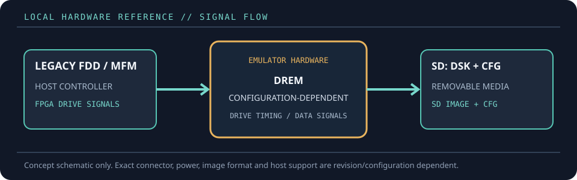

[ FLOPPY EMULATORS // IDENTIFIED HARDWARE ]
DREM Programmable Floppy & Disk Drive Emulator
A model-specific record for a physical floppy-drive emulator. It distinguishes the emulator hardware, removable media and host-facing drive signals; firmware support alone does not establish compatibility with a particular machine.

MODEL IDENTIFICATION: PRODUCT RECORD: DREM Programmable Floppy & Disk Drive Emulator. Compatibility is conditional on the actual host’s connector, controller, signal conventions, drive geometry, firmware and media configuration; do not infer fit from connector count or nominal drive size alone.
Recorded specifications
| Cataloged part | DREM Programmable Floppy & Disk Drive Emulator |
|---|---|
| Manufacturer / project | DREM |
| Product family | FPGA-based removable-media emulator for legacy floppy and hard-drive interfaces |
| Drive bay / physical fit | No universal front-panel bay size is claimed in the cited technical brief; use the enclosure/bracket supplied for the selected DREM configuration and host. |
| Host interface / power | FPGA-generated legacy drive signals; 5 V power. SD card is removable storage. VGA output and PS/2 keyboard are optional management interfaces; USB is used for firmware updates. |
| Removable media / image format | Raw sector-by-sector .DSK image plus matching .CFG geometry/encoding metadata on SD media. Track configuration, encoding and data rate must match the target system. |
| Host compatibility | Multiple legacy systems using supported floppy or MFM/RLL-class drive signals; DREM supplies example configuration files and recommends capturing low-level format logs for unknown formats. Verify the specific interface before use. |
| Variants and identification | DREM is a configurable hardware platform rather than one universal drive-bay SKU. Catalog the installed board/firmware, signal interface, enclosure and configuration file together. |
Compatibility and handling
- DREM decodes and regenerates supported disk data rather than replaying a raw magnetic flux stream; its documentation uses sector images with CFG metadata.
- A CFG file describes geometry and encoding that the raw DSK file does not contain; mismatched configuration can make an otherwise readable image unusable.
- VGA/PS/2 file management is optional: DREM can load a default setup from the SD card. Use the manufacturer’s logs and interface documentation for unusual formats.
Before installation, compare the emulator’s exact revision and interface against the host service documentation. Confirm connector keying and pin one, power voltage/polarity, drive select, motor/disk-change signals, expected density and image geometry. Preserve a read-only copy of original disk images and configuration files before experimenting.
Model notes
DREM is a configurable hardware platform rather than one universal drive-bay SKU. Catalog the installed board/firmware, signal interface, enclosure and configuration file together.
Raw sector-by-sector .DSK image plus matching .CFG geometry/encoding metadata on SD media. Track configuration, encoding and data rate must match the target system.
Sources & further reading
- DREM — technical informationManufacturer explanation of DSK images, CFG metadata and optional file-management hardware.
- DREM — product overviewManufacturer overview of removable SD storage, 5 V power, configurable rates and combined HDD/FDD operation.
- DREM — FAQManufacturer background on how DREM reconstructs drive signals from decoded data.
Manufacturer statements describe product capability, not guaranteed operation on every revision of the named host. Confirm current manual, firmware and wiring before installation.